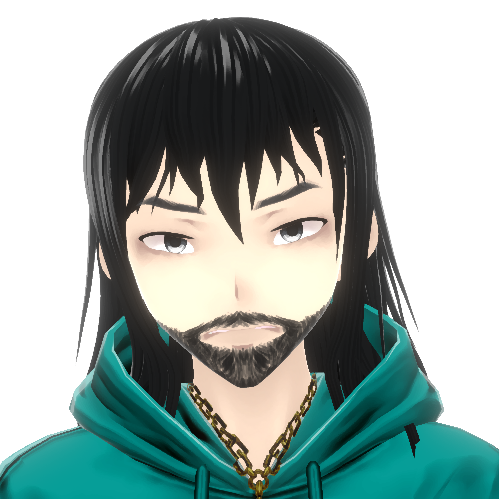

Hello, I am von Schappler (aka Manoel Viturino)
Sumary
I am a very shy Brazilian autistic virtual-streamer on Twitch. I am graduated on Physics and my main line of work is creating codes in various programming languages (Fortran, Pascal, C, Java, Python, for example) for geophysical data processing.
Alongside my formation, I gained some experience with HTML, CSS, JavaScript. Right now I am learning node.js, electron.js, React and MongoDB, while doing my best to improve my knowledge on these topics, while I keep looking for a home-office half-time job.
Some of my recent work can be found on my GitHub page or on in this website.
Education
Basic education:
2000-2004: Degree on Physics:
Taken at Universidade Católica de Brasília
Focus on Quantum Mechanics and Computational Physics
1997-1999: High School
Taken at Centro de Ensino Médio 02 - Ceilândia Norte
1989-1996: Elemental School
Taken at Centro de Ensino Médio 08 - Ceilândia Norte
Complimentary education:
2010-2011: Graphical Desginer
Taken at SAGA - School of Art, Game and Animation
2009-2009: Curso Público de Geofísica Avançada
Taken at Geosoft Incorporated
2009-2009: 3DMax Intermediário
Taken at AZIMUT - Autodesk Training Center
2009-2009: 3DMax Básico
Taken at AZIMUT - Autodesk Training Center
2008-2008: Curso Público Geosoft Target
Geosoft Incorporated
Work Experience (last 3 ones):
2013 - now: Twitch
Currently self employed as streamer and content creator.
Stream from Monday to Friday, usually at 7pm (GTM-3)
Work on improvements to my streams, making Python scripts to use with the chatbot applications.
2008-2010: Prospectors Aerolevantamentos e Sistemas
Processing data center manager
Work with cartography
Code applications/scripts for data processing
Process Aerogeophysical data
2006-2007: Instituto de Educação Sagarana
Physics Teacher
Lecture Physics classes to High School students
Lecture Basic Science and Math classes to Elemental School students
Skills
Capable of self-learning
Capable of speaking intermediary English
Intermediate knowledge on Photoshop, Illustrator, Adobe Premiere and Adobe After Effects
Capable of solving problems, when necessary - as long as they do not trigger any kind of axiety or frustration
Merits and flaws
Merits
Fast-peace learner
Focus on completing projects
Like to solve problems myself, looking for help ONLY when strictly necessary
Enjoy challenge, as long the challenge fits my hyperfocus and does not start causing frustration
Flaws
Due to the autistic behavior, a bit anti-social
Can't stick to a job for long periods if the job starts causing either frustration or does not offer a challenge possible to overcome
Prefer to work in small teams or alone
Extremely shy - I don't like showing myself on video calls (reason why I rely on the virtual self, von Schappler)
Tends to stay too silent or quiet when focused
Sudden mood changes, also caused by the autistic behavior, specially when working under pressure and/or frustrated
My mess is my space - I can find myself in the middle of the chaos I create myself
Interests and hobbies
Gaming
Programming languages
Learning new things
Listening to music
Watching movies
Aditional Information
Published Scientific Articles in Events:
Programa Equilíbrio Químico, on XXVI Congresso Latinoamericano de Química e 27.ª Reunião Anual da Sociedade Brasileira de Química (2004)
Impureza hidrogenóide magnética sujeita a confinamento quântico parabólico: caos clássico e quântico, on XI Simpósio Internacional de Iniciação Científica da USP (2003)
Impureza hidrogenóide magnética sujeita a confinamento quântico parabólico: caos clássico e quantico, on V Semana Universitária da Católica (2003)
Automatos Celulares Determinísticos - Simulação Visual, on: VIJPC - Jornada de Produção Científica das UCs (2002)
Published Unregistered Software:
2004 - Calculadora de Equilíbrio Químico (Pascal/Dephi)
2003 - Simulador de Caos Quantico para Sistemas Dinâmicos (Maple, C and OpenGL)
2003 - Conversor de Unidades (Java Applet)
2002 - Simulador de Automata Celular Determinístico (C and OpenGL)